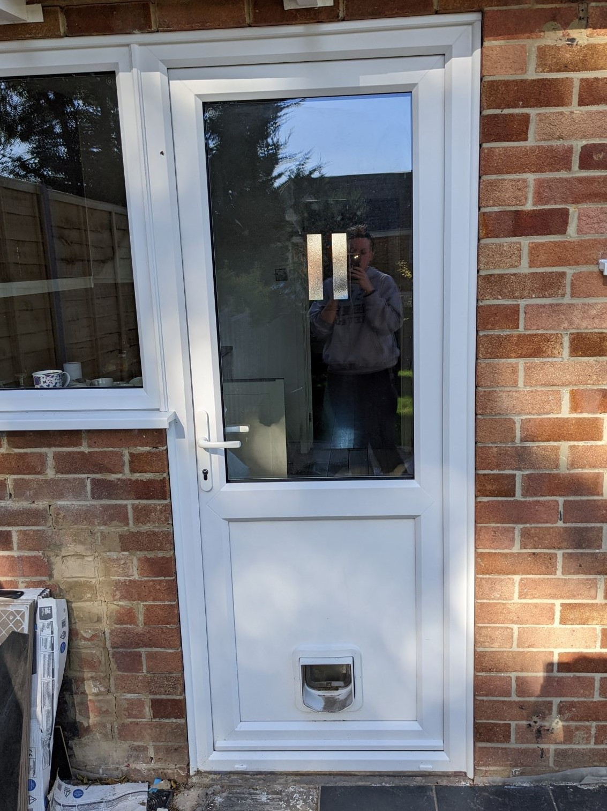
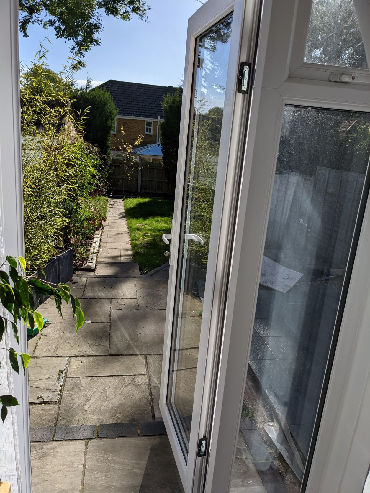
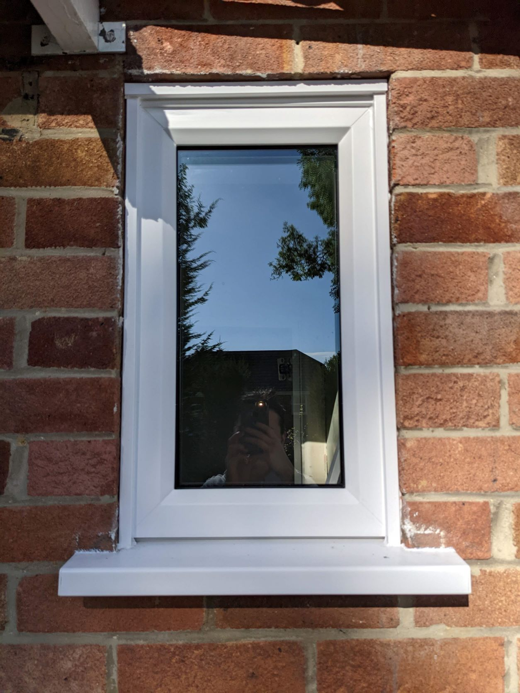

WINDOWS
casement, tilt and turn or sash
With over 18 years experience of of fitting windows, doors and conservatories, your job is in safe hands. All windows are measured, made to order and tailored to your individual needs. We fit a wide range of uPVC, aluminium, timber and timber alternative windows.
Serving homes all accross Portsmouth and the wider Hampshire area, no project is too big or too small. We pride ourselves on providing a personalised service to suit your needs.
Call or email us today to arrange a free quote.
casement, tilt and turn or sash
composite, French, bi-fold and front doors
orangeries, Edwardian and modern styles
casement, tilt and turn or sash
composite, French, bi-fold and front doors
orangeries, Edwardian and modern styles
Service was topnotch, so pleased! We weren't sure what new door we wanted but Osgood Windows showed us the styles on offer and gave us expert advice!Jonathan
Our new conservatory has given us so much more space, it's like having an extra room. Dave fitted it so quickly too!Mrs P
Our new windows have refreshed the house and the choice was excellentJanine & Harry

osgoodwindows.com

@OsgoodWindows

07876 764329